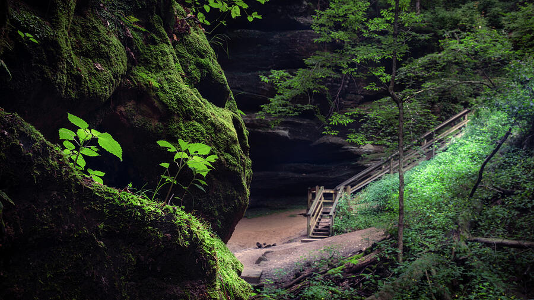
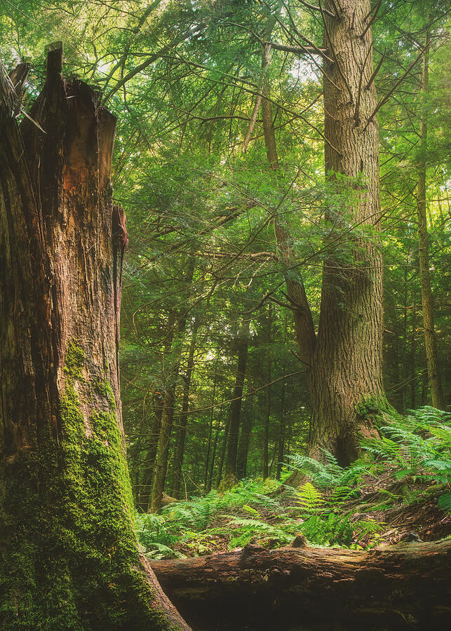
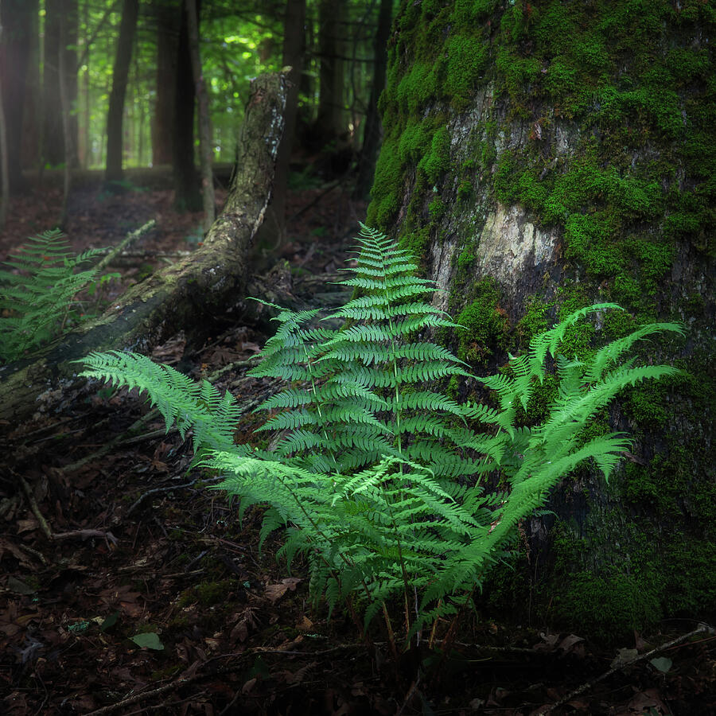
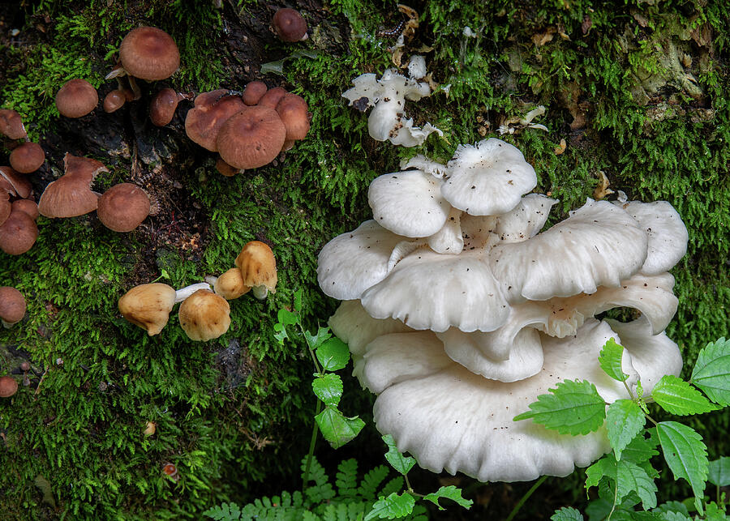
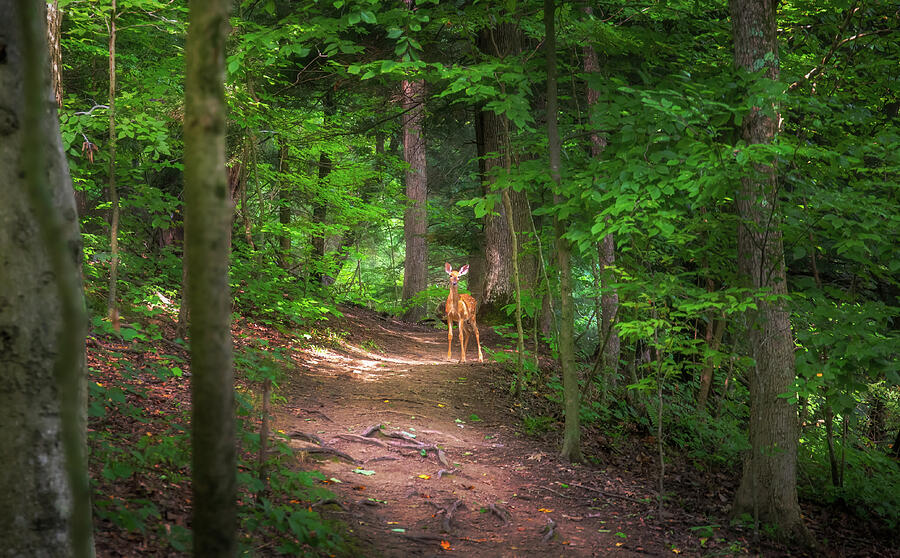
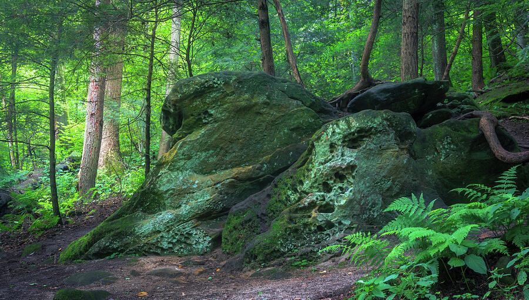
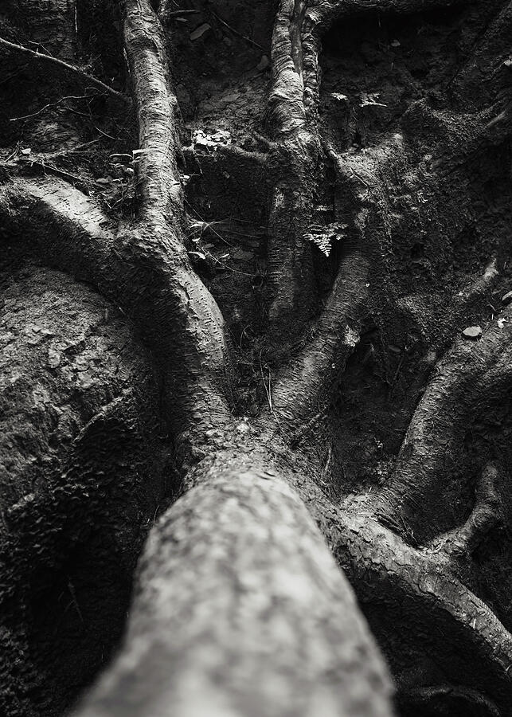
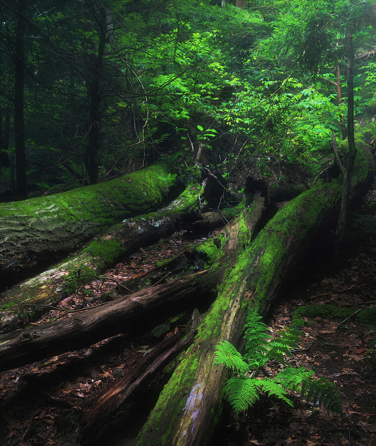
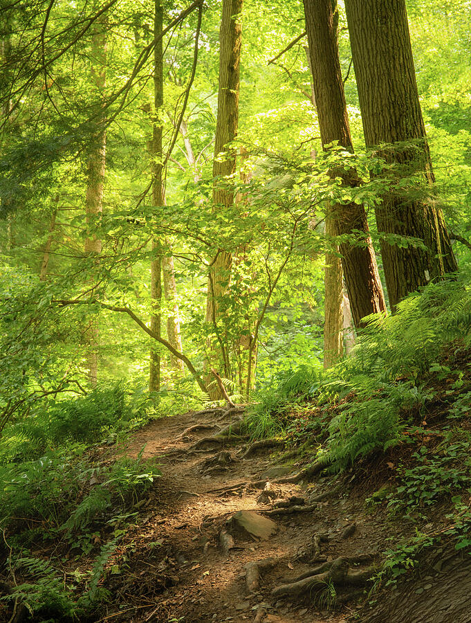

The character of Mohican
The forest became the subject long before I reached a landmark.
Mohican is often described through Lyons Falls, the covered bridge, Clear Fork Gorge, and the fire tower. Those are useful anchors, but my strongest photographs came from what happened between the obvious destinations. Ferns caught isolated light. Moss softened fallen timber. Old roots and sandstone created graphic patterns. A fawn appeared on the trail and immediately changed the rhythm of the morning.
That is what makes Mohican especially rewarding for a photographer. The park is not dependent on one grand view. It rewards a slower pace and a willingness to stop for smaller scenes that can disappear when the sun moves a few feet across the canopy.
The finished images throughout this guide link directly to their available print pages. For a broader look at regional work, continue to my Ohio nature photography collection or the Forest Light collection.
Begin at Lyons Falls.
The first goal is not to rush toward the waterfalls. The trail enters a layered forest where hemlocks, roots, ferns, moss, sandstone, and shifting light begin offering compositions almost immediately. I worked slowly and allowed small subjects to interrupt the hike.
Work the gorge and woodland details.
As the sun rises, the forest becomes more contrasty. Rather than fighting that, look for isolated patches of light on trunks, ferns, boulders, and moss. The strongest frame may be only a few feet from the trail.
Keep the route flexible.
Water flow at Big and Little Lyons Falls varies with recent weather. If the falls are not the strongest subject, the surrounding gorge still offers excellent texture and atmosphere. I would rather leave with a distinctive forest photograph than force a waterfall composition simply because it is famous.
Add one or two nearby Mohican landmarks.
If time and light cooperate, the covered bridge, Clear Fork Gorge, swinging bridge, fire tower, or another section of the trail network can add variety. I would not try to photograph all of them in one day. Choose the stop that best fits the light and your energy.
Return your attention to the forest.
Warm light through the canopy can be the strongest part of the day. Watch for shafts of light rather than broad illumination. A single lit trunk or narrow trail can provide more structure than an evenly bright forest.
Lyons Falls Trail
Do not hike past the photographs while looking for the waterfall.
My day began around the Lyons Falls trail system, one of Mohican's signature hiking areas. The route is known for Big and Little Lyons Falls, but the forest surrounding them is just as important photographically. The gorge is layered with hemlock, exposed stone, damp surfaces, roots, and small pockets of green that change character as the sun climbs.
The photograph beside this section is a good example of why I slowed down. The subject is not a famous landmark. It is the relationship between the moss-covered wall, the shadowed path, and a brighter opening farther into the forest.
When I photograph wooded trails, I try to simplify. Instead of showing every tree, I look for one strong visual route through the frame: a trail edge, a diagonal rock wall, repeating trunks, or light that pulls the eye toward a destination.

Morning forest light
Directional light creates order inside a complicated woodland.
Dense Ohio forest can become visually chaotic very quickly. The answer is usually not more contrast or a wider lens. I look for light that chooses the subject for me. A bright opening behind a tree, a warm patch on bark, or a narrow beam through the canopy can separate one element from dozens of competing branches.
The morning light at Mohican worked especially well with ferns and mature trunks because the forest floor remained darker. That contrast gave the photographs depth without requiring an exaggerated edit.
I also tried to keep the greens believable. Mohican is intensely green in summer, but pushing saturation too far can flatten the scene and make every plant compete equally.

Small subjects, strong photographs
Moss, ferns, mushrooms, roots, and fallen wood.
One reason I would return to Mohican is the amount of intimate forest material packed into a relatively small area. These details also make useful fine-art subjects because they are less tied to a single iconic viewpoint and more connected to texture, pattern, and atmosphere.
Look for one clean frond.
A single fern against moss can be more effective than an entire hillside. Watch the edges of the frame and simplify the background.
Use side light when possible.
Moss gains dimension when light grazes across it. A polarizer can reduce glare from wet surfaces, but rotate it carefully so the scene does not become unnaturally dark.
Change scale completely.
Mushrooms turn the day from landscape photography into close observation. They also provide warm browns and whites that break up an otherwise green portfolio.
Use line and repetition.
Old roots and fallen trunks become almost abstract when color is removed or the composition is tightened around shape and texture.
Forest-floor detail
A fern can carry the entire frame.
Close forest photographs are often easier to control than broad scenes. Here, the fern provided a clean geometric structure while the moss created a softer surrounding texture. I kept the composition simple and allowed the greens to remain quiet rather than turning the scene into a study of saturation.
These smaller details are also useful when building a broader body of work from one location. They keep a portfolio from becoming ten variations of the same wide forest view.

Changing scale
The mushrooms were a reminder to stop looking only forward.
It is easy on a hiking trail to keep scanning for the next bend, waterfall, or overlook. The mushroom clusters were nearly the opposite kind of subject: small, close, and dependent on noticing what was happening at the edge of the trail.
I liked the contrast between the pale mushrooms, warmer brown caps, and deep green moss. That color variety made the image feel different from the broader woodland photographs while still belonging to the same day.

Unexpected wildlife
The best wildlife moment was not on the schedule.
A fawn appeared along the forest trail and gave the morning a completely different kind of image. I stayed back and photographed the animal within the larger woodland rather than trying to turn the encounter into a tight portrait.
That approach preserved the context: the trail, deep green forest, and small patch of light around the deer. It also kept me from pushing closer simply for a larger subject in the frame.
Wildlife is another reason not to overschedule a photography day. A few unexpected minutes can be more valuable than reaching the next planned stop exactly on time.

Sandstone and scale
Large boulders give the forest a heavier visual language.
Mohican's boulders and exposed rock create a useful counterpoint to delicate ferns and thin branches. I looked for compositions where the stone felt massive but still connected to living vegetation.
The best images usually came from getting close enough that the rock became a dominant shape rather than a background object. Ferns then worked as a scale reference and softened the harder geometry.

Monochrome detail
Old roots became more about line than color.
Some forest subjects improve when the green is removed. The twisted root system already had strong directional movement and texture, and black and white made those shapes more immediate.
I would not convert every Mohican photograph to monochrome. The forest color is part of the experience. But one or two black-and-white images can give a collection a visual pause and emphasize structure that might otherwise be hidden by color.

Photography gear
I kept the kit simple enough to hike with.
For this kind of Ohio woodland photography, versatility matters more than carrying every lens. The forest changes quickly from broad scenes to small details, and a simple setup makes it easier to react without constantly rebuilding the camera bag.
Telephoto lens
Worth carrying if wildlife is a priority. I would not chase animals simply to justify bringing it.
Lens cloths, water, bug protection
Damp forest surfaces, summer insects, roots, and uneven trail make practical hiking preparation as important as camera settings.
Planning a photography day
The practical details matter once you are under the canopy.
Download maps first
Cell service was limited during my visit. Save the park map, trail information, and your driving route before you enter the forested interior.
Start early, legally
Early light is excellent, but check current access rules. Lyons Falls Trail and Gorge Overlook have specific nighttime closure language in Ohio regulations.
Watch the forest floor
Roots, wet stone, mud, and uneven trail can matter more than mileage. The official park map specifically warns visitors about slippery spots.
Do not depend on waterfall flow
Recent rain changes the falls. Build the day around the forest as well, so low water does not turn the trip into a disappointment.
Protect the highlights
Bright canopy openings can clip quickly while the forest remains dark. Expose carefully and let some shadows stay deep rather than flattening everything.
Use the polarizer selectively
It is excellent for glare on leaves and stone, but maximum polarization can make already-dark forest scenes too heavy.
Keep the route flexible
If a patch of light, wildlife encounter, fungi, or a quiet trail scene is working, stay with it. The itinerary should not force you away from the best subject.
Check conditions before leaving
Trail status, weather, access, and facilities can change. Use current park resources rather than relying only on an old screenshot or saved blog post.
Helpful planning links
Resources I would save before leaving home.
Because mobile service can be inconsistent, open or download the important pages before entering the park. These links cover trail maps, regional planning, and current visitor information.
Photographs from the day
Mohican in forest light, texture, and detail.
The images below link to the finished print pages. Together they show why I think of Mohican less as a single-landmark destination and more as a layered woodland photography location.

Morning Light Through the Forest
Original Mohican State Park photography by Dan Sproul.
View this print →Mature Forest and Ferns
Original Mohican State Park photography by Dan Sproul.
View this print →Ancient Tree Roots in Black and White
Original Mohican State Park photography by Dan Sproul.
View this print →Fawn Along a Forest Trail
Original Mohican State Park photography by Dan Sproul.
View this print →Ancient Boulders and Ferns
Original Mohican State Park photography by Dan Sproul.
View this print →
Moss-Covered Fallen Trees
Original Mohican State Park photography by Dan Sproul.
View this print →Wild Mushrooms and Moss
Original Mohican State Park photography by Dan Sproul.
View this print →
Sunlit Forest Trail
Original Mohican State Park photography by Dan Sproul.
View this print →Mossy Gorge Along the Lyons Falls Trail
Original Mohican State Park photography by Dan Sproul.
View this print →Fern and Moss on the Forest Floor
Original Mohican State Park photography by Dan Sproul.
View this print →Common questions
Planning a Mohican State Park photography day.
Is one day enough for Mohican State Park photography?
Yes for a focused visit. One day can cover the Lyons Falls area, intimate forest scenes, boulders, ferns, and one or two nearby landmarks. If you want several long hikes, multiple lighting periods, or a more complete exploration of the park and state forest, add another day.
What time should I begin at Lyons Falls?
Early morning gives you softer light and generally a quieter experience, but do not assume you can enter the trail in darkness. Current Ohio rules specifically list the Lyons Falls Trail and Gorge Overlook area among places closed from one-half hour after sunset until one-half hour before sunrise. Recheck current rules before visiting.
Is cell service reliable?
It was limited during my visit. I recommend downloading the park map, saving your driving route, and keeping any trail notes available offline before you arrive.
Do I need a tripod?
Not for every frame, but it is valuable in the deep shade of Mohican's forest. A tripod lets you stay at low ISO, refine the edges of a composition, and make slower exposures when the light drops.
What if Lyons Falls has low water?
Keep photographing. Water flow changes with weather, but the surrounding forest, gorge, ferns, moss, roots, sandstone, and intimate trail scenes are strong subjects even when the waterfalls are less dramatic.
What lens is most useful?
A versatile standard zoom is an excellent choice because the day can move quickly between broad forest scenes and small details. A telephoto is helpful if wildlife is a priority, but I would not carry extra weight unless you expect to use it.
What season is best?
Every season changes the visual character. Spring can bring fresh green and water flow, summer creates dense fern-filled woodland, autumn adds color, and winter simplifies the forest. Weather and recent rain can matter as much as the month.
What stayed with me
Mohican was less about reaching the falls than learning to slow down before them.
The photographs I remember most from the day are not only the obvious destinations. They are the beam of light through a dark forest, a fern against moss, mushrooms tucked into a damp corner, heavy boulders beside delicate leaves, old roots turning into black-and-white lines, and a fawn standing quietly on the trail.
Mohican works because the landscape keeps changing scale. One minute the subject is an entire gorge. The next it is a single frond. That variety made one day feel full without needing to race through every attraction in the park.
For photographers, that may be the most useful way to approach Mohican: begin with a route, but let the forest decide where you stop.
Forest Light
Explore Woodland Photography
Continue to atmospheric forests, filtered light, trails, ferns, and quiet biophilic landscape photography.
View Forest Light →Ohio photography
Explore More Ohio Nature Artwork
View landscapes, wildlife, waterfalls, forests, lakes, bridges, and regional scenes from across Ohio.
View Ohio photography →